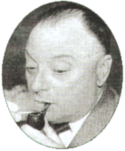
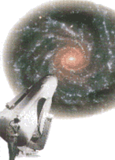

| |
|
1928
 Alexander
Fleming, penisilini buldu. Bu antibiyotik ilaçla tedavide
yeni bir dönem baþlattý. Alexander
Fleming, penisilini buldu. Bu antibiyotik ilaçla tedavide
yeni bir dönem baþlattý.
|
| 1930
Plüton
gezegeni keþfedildi. Astronom Clyde Tombaugh, Lowell gözlemevinde
çalýþtýðý sýralarda çektiði bir dizi fotoðrafta
küçük gezegenlerden daha yavaþ hareket eden bir gökcismi
saptadý. Bu gök cismi uzun süredir orada olduðundan kuþku
duyulan Plüton gezegeniydi.
|
| 1931
Alman
bilim adamý Ernst Ruska ilk elektronik merceði geliþtirdi.
Bu mercek elektronlarý ýþýk gibi odaklayan bir
elektromýknatýstan oluþuyordu. Ruska, seri halde birkaç
elektron merceði kullanarak ilk elektron mikroskopunu
1933 yýlýnda yaptý.
|
| 1931
 Avusturyalý
fizikçi Wolfgang Pauli, nötrinolarýn varlýðý tezini
ileri sürdü. Pauli, nötrinonun varlýðýný,
radyoaktif beta bozunumuna iliþkin varsayýmla enerjinin
ve momentumun korunumu yasalarýnýn uyum içinde olmasýný
saðlamak amacýyla öngörmüþtü. Nötrino adý bu parçacýða
ünlü Ýtalyan fizikçi Enrico Fermi tarafýndan verildi.
|
|
| 1929
 Ünlü
gökbilimci Edwin Hubble, Evren'in geniþlediði fikrini
ortaya attý. Hubble'a göre Evren, gökadalarýn
birbirlerinden uzaklaþma hýzlarý ile birbirlerine
olan uzaklýklarý arasýndaki oran sabit kalacak þekilde
geniþlemektedir.
|
| 1930
Ýngiliz
fizikçi Paul Dirac, antimadde kavramýný ortaya attý.
Dirac, elektronlarýn enerji düzeyleri konusundaki çalýþmalarý
sýrasýnda elektronun karþýt parçacýðýnýn varlýðýný
ileri sürdü. Bu çalýþma, elektrik yükü dýþýnda
her yönüyle elektronun özdeþi olan bir parçacýðýn
laboratuvarda üretilmesiyle sonuçlandý. Bu maddeye
pozitron adý verildi. |
| 1931
Karl
Jansky, Güneþ Sistemi'nin dýþýndan gelen radyo
dalgalarý keþfetti. 1928 yýlýnda New Jersey'de
bulunan Bell Laboratuvarlarýnda çalýþmaya baþlayan
Jansky, burada telefon haberleþmesini etkileyen çeþitli
parazitlerin kaynaðýný araþtýrmakla görevlendirildi.
Yönlendirilebilir doðrusal bir anten kurarak biri dýþýndaki
tüm giriþim kaynaklarýný belirledi. Aylar süren çalýþmalardan
sonra 1931'de, bir türlü saptanamayan bu giriþim
kaynaðýnýn yýldýzlar olduðunu buldu. Birkaç ay
sonra da bu kaynaðýn Yay takýmyýldýzý doðrultusunda
olduðunu keþfetti.
|
|
|